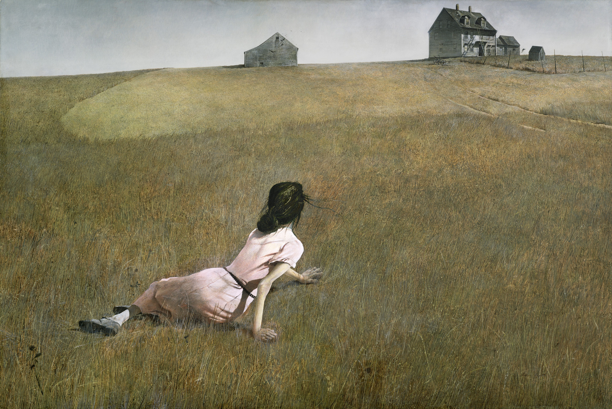

↓ Jump down to the documentary video
Who He Is
Andrew Wyeth was an American painter who spent most of his life in two places: Chadds Ford, Pennsylvania, and Cushing, Maine. He worked almost entirely in those two landscapes, returning to the same fields, the same farmhouses, the same people — year after year.

Christina's World, 1948
He painted in tempera and watercolor. His work is realistic — sometimes photorealistic — but the feeling it carries is something else. There is a stillness to it that takes a moment to settle into. It doesn't announce itself.
My Favorite Works
Wyeth painted hundreds of pieces, but these four stand out to me the most:
Wind from the Sea (1947)
This is a view from an attic window in the Olson house in Maine. The way the wind blows the tattered lace curtains into the room is actually meant to be a symbolic, quiet portrait of his friend, Christina Olson.
The Revenant (1949)
This is a fascinating, somewhat haunting self-portrait of Wyeth. The title refers to someone who has returned from the dead or a long absence, which perfectly matches the eerie, detached mood of the painting.
Her Room (1963)
A brilliant interior scene painted in tempera. It perfectly captures that quiet, almost magical realism Wyeth is known for. The way the light hits the objects in the room creates a very specific, still atmosphere.
Ice Storm (1971)
This piece shows a neighbor, Johnny Lynch, in profile looking out a window. It’s a quiet, intimate painting that explores themes of solitude and classic New England independence.
```
Why I Keep Coming Back
These are the main reasons I appreciate his work:
- His intense focus on specific places
- The fields of Pennsylvania
- The coast of Maine
- His use of muted, natural color palettes
- The quiet emotional weight of his subjects
"I think one's art goes as far and as deep as one's love goes." — Andrew Wyeth
Learn More About Wyeth
Here is a short documentary on his life and style. (I had to figure out how to embed this!)